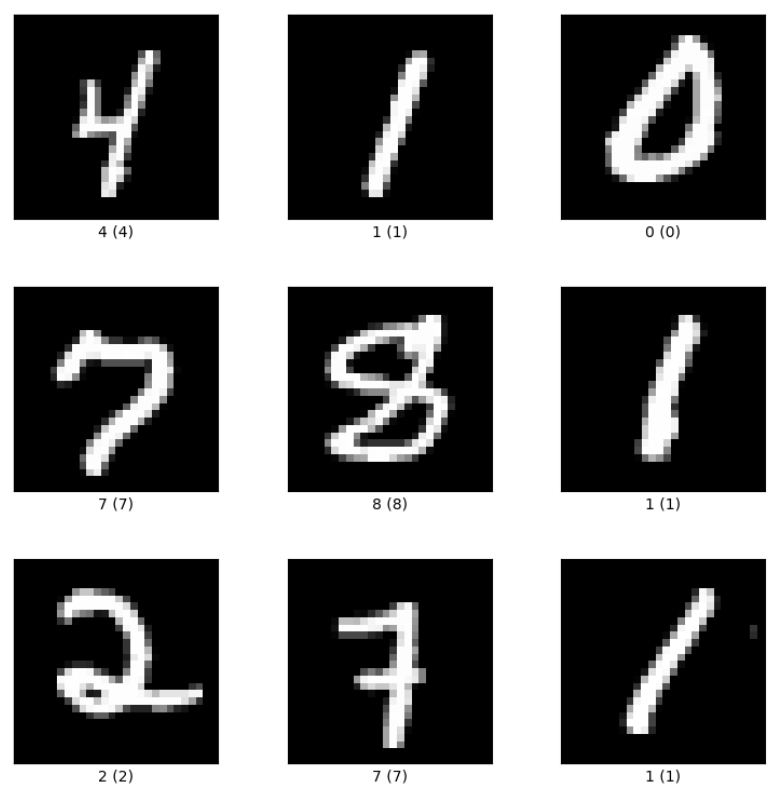
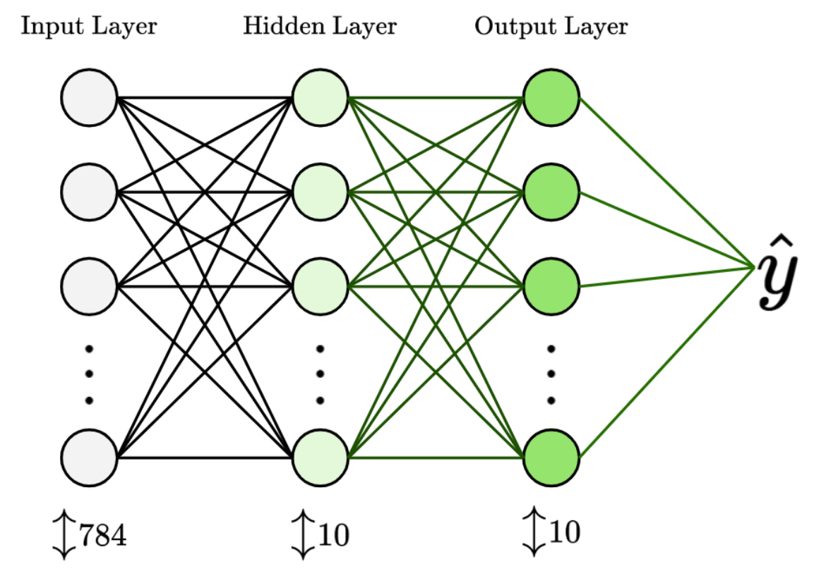
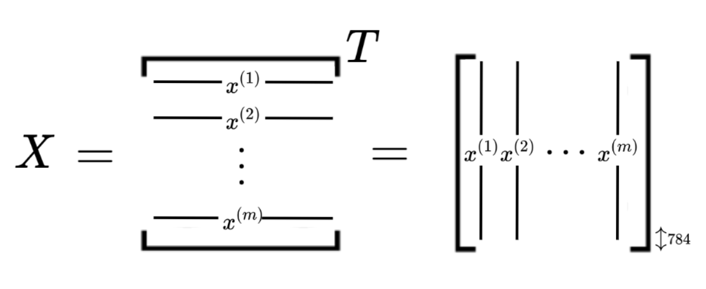
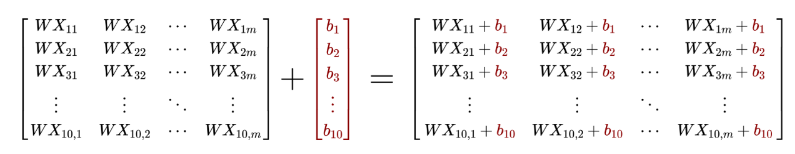
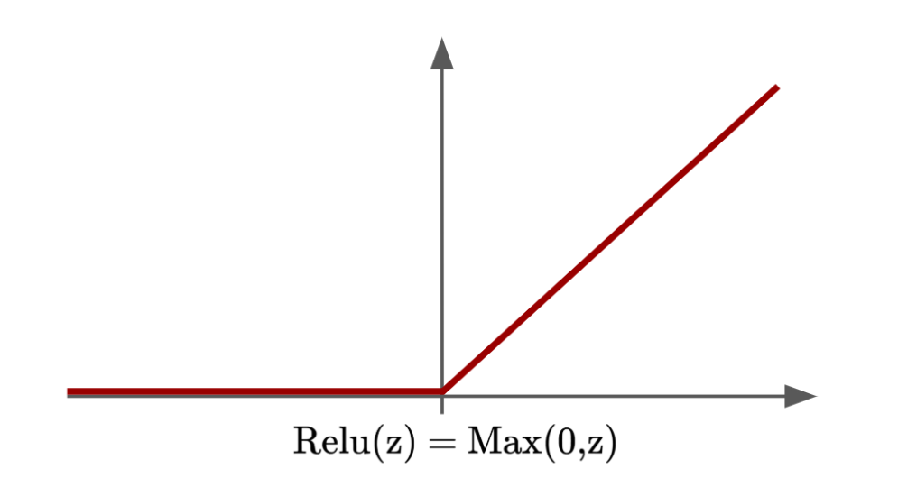

Building a Neural Network from Scratch
In this project, I build an image-classification neural network using only NumPy and mathematics.
30 OCTOBER 2024
In this project, we’re going to build a simple neural network from scratch using NumPy.
We’ll build a shallow two-layer neural network with one hidden layer and one output layer. This neural network will be trained on data from the MNIST handwritten digit dataset and will classify input images as digits.
The MNIST dataset consists of 28 × 28 grayscale images of handwritten digits. Each image is labeled with the digit it represents.

Here’s the structure for this project post:
1. Neural Network Overview
Our neural network will have three layers in total: an input layer, a hidden layer, and an output layer.

The input layer has 784 nodes, which corresponds to the total number of pixels in each 28 × 28 input image from the MNIST dataset. Each pixel is described by a value in the range $[0,255]$, which represents its intensity: white is 255 and black is 0.
Next, to keep things simple, we’ll give the hidden layer 10 nodes. The values of these nodes are first calculated from the weights and biases applied to the 784 nodes in the input layer, followed by a ReLU activation function.
Finally, the output layer will have 10 nodes, corresponding to the 10 possible output classes. Because the possible digit values range from 0 to 9, each output node represents one digit. The values of these nodes are first calculated from the weights and biases applied to the 10 nodes in the hidden layer, followed by a Softmax activation function.
The output layer then gives us a column containing 10 probability values, with one value in the range $[0,1]$ for each class.
We’ll classify the image as the digit whose class has the highest probability value.
2. Describing the Neural Network Mathematically
In this section, we will formalize our neural network mathematically so that we can reproduce the relevant variables in code later.
We’ll begin by understanding the dimensionality of our input data.
Conventionally, our input data would stack the information for each image as rows of a matrix. However, because we will be performing matrix multiplication with weights, we’ll transpose the conventional matrix to obtain our matrix $X$, which stores the image data as columns instead. Thus, $X$ has columns of height 784 and contains $m$ columns in total, where the input dataset contains $m$ images.

Next, we’ll look at the weights and biases between our neural network layers.
Let’s index our layers as follows: the input layer is layer 0, the hidden layer is layer 1, and the output layer is layer 2.
Between each pair of layers is a set of connections between every node in the previous layer and every node in the following layer. When values from one layer are passed to the next, a weight is applied to each node value from the original layer, followed by a bias term added to the weighted node value. Finally, an activation function is applied to the weighted and biased node value to add non-linearity to the output.
Mathematically, we describe it like this:
Let’s say we’re going from layer 0, which has 784 nodes, to layer 1, which has 10 nodes. Each node $h_i$ in layer 1 is computed as:
Where:
- $x_j$ is the input value from originating node $j$.
- $w_{ij}$ is the weight connecting input node $j$ to node $i$.
- $b_i$ is the bias applied to node $i$.
- $f(\cdot)$ is the activation function, such as ReLU, sigmoid, or $\tanh$.
Let’s call the weight matrix connecting layer 0 to layer 1 $W^{[1]}$. Our weight matrices have dimensions $n^{[L]}\times n^{[L-1]}$, where $n^{[L-1]}$ is the number of nodes in the originating layer and $n^{[L]}$ is the number of nodes in the receiving layer.
For example, $W^{[1]}$ is a $10\times784$ matrix, while $W^{[2]}$ is a $10\times10$ matrix.
Next, for biases, we know that they are constant terms added to each weighted node in the receiving layer. Biases are therefore represented as an $n^{[L]}$-dimensional vector. Let’s call the bias vector connecting layer 0 to layer 1 $b^{[1]}$.
For example, both $b^{[1]}$ and $b^{[2]}$ are 10-dimensional vectors.
Moving on to the next section, we’ll formulate the mathematical operations that happen during the forward propagation phase of our neural network.
2.1. Forward Propagation
During forward propagation, weights, biases, and activation functions are applied to our data.
Let’s cover the mathematical operations going from layer 0 to layer 1:
For our input data matrix $X$, we’ll apply weight matrix $W^{[1]}$ and bias vector $b^{[1]}$ to obtain the unactivated output $Z^{[1]}$:
$W^{[1]}$ has dimensions $10\times784$, while $X$ has dimensions $784\times m$, so $W^{[1]}X$ has dimensions $10\times m$. We then add the 10-dimensional vector $b^{[1]}$ to every column in $W^{[1]}X$, as shown below:

Next, we’ll apply the Rectified Linear Unit (ReLU) activation function to $Z^{[1]}$. ReLU is a simple function that adds non-linearity to our neural network, as shown below:

When applying ReLU to $Z^{[1]}$, we’ll call the ReLU function $g^{[1]}$ and its output $A^{[1]}$, whereby:
Next, we’ll cover the mathematical operations going from layer 1 to layer 2:
We’ll now apply the weights and biases going from layer 1 to layer 2, whereby:
Then, we’ll apply the Softmax activation function to $Z^{[2]}$ to get the final output. If we had more hidden layers, we could use an activation such as ReLU, but because this is the output layer, we specifically need the Softmax activation function.
This is because, for each column in $Z^{[2]}$, Softmax exponentiates each individual entry and then divides each exponentiated entry by the sum of all exponentiated entries in that column.
This ensures that the output values are in the range $(0,1)$ and sum to 1, making them interpretable as probabilities. This is necessary for our image-classification task.
For the Softmax function $g^{[2]}$, we therefore have:
Now that we’ve covered the final layer, we’ve worked through the entire forward propagation process in the neural network. Next, we’ll cover backward propagation.
2.2. Backward Propagation
We need to perform backpropagation to carry out gradient descent and make our neural network learn.
Mathematically, we compute the derivative of the loss function with respect to each weight and bias parameter. This allows us to identify each parameter’s contribution to the total loss and update or optimize it accordingly.
Let’s begin by choosing a suitable loss function:
Because we’re using the Softmax activation function, we’ll use Cross-Entropy Loss, also called log loss. For a given column:
Here, class label $y$ is the one-hot encoded ground truth, where only one class is 1 and the rest are 0, while $\hat{y}$ contains the predicted probabilities.
Because the ground truth $y$ is one-hot encoded, the loss simplifies to:
Here, $c$ is the correct class index. The closer $\hat{y}_c$ is to 1, the closer the loss is to 0. As $\hat{y}_c$ approaches 0, the loss approaches $+\infty$.
By minimizing the loss function, we improve the accuracy of our model.
Next, let’s go over the gradient descent and backpropagation phase in detail:
To minimize the loss, we update each parameter by subtracting the learning rate $\alpha$ multiplied by the derivative of the loss function with respect to that parameter. We repeat this process over many rounds of gradient descent, allowing us to converge toward a set of parameters that minimizes the total loss.
The gradient descent process looks like this:
Therefore, our objective is to find the derivatives $\frac{\partial J}{\partial W^{[1]}}$, $\frac{\partial J}{\partial b^{[1]}}$, $\frac{\partial J}{\partial W^{[2]}}$, and $\frac{\partial J}{\partial b^{[2]}}$.
Let’s make things simpler and label these values as $dW^{[1]}$, $db^{[1]}$, $dW^{[2]}$, and $db^{[2]}$, respectively.
To find each of these values, we need to step backward through our network, starting with $\frac{\partial J}{\partial A^{[2]}}$, also labeled as $dA^{[2]}$, because $A^{[2]}$ was the final output.
2.2.1. Deriving $dA^{[2]}$
Let’s do some quick math to derive $dA^{[2]}$:
First, consider a single data point in $\hat{y}$:
Generalizing to all data points in the vectors $y$ and $\hat{y}$:
Finally, we obtain:
2.2.2. Deriving $dZ^{[2]}$
We find $dZ^{[2]}$ as follows:
To find $dZ^{[2]}$, we first need the derivative of the Softmax output $A^{[2]}$ with respect to $Z^{[2]}$. To simplify the notation, we’ll temporarily write $Z^{[2]}$ as $x$:
Let’s compute $\frac{\partial A_i^{[2]}}{\partial x_j}$ for arbitrary indices $i$ and $j$:
Observe that:
Similarly:
Therefore, when $i=j$, corresponding to a diagonal entry of the Jacobian matrix:
When $i\ne j$, corresponding to an off-diagonal entry:
To summarize:
Returning to our original task of finding $dZ^{[2]}$, for output component $k$:
Finally, for all elements of $Z^{[2]}$, we have:
2.2.3. Deriving $dW^{[2]}$
Now we want to find $dW^{[2]}$. Using the chain rule again:
Here, $m$ is the number of training examples.
Because $Z^{[2]}=W^{[2]}A^{[1]}+b^{[2]}$, we have:
Therefore:
2.2.4. Deriving $db^{[2]}$
Now we want to find $db^{[2]}$. Using the chain rule again:
Here, $m$ is the number of training examples.
Because $Z^{[2]}=W^{[2]}A^{[1]}+b^{[2]}$, we have:
Therefore:
2.2.5. Deriving $dZ^{[1]}$
Now we want to find $dZ^{[1]}$. Using the chain rule:
Because $Z^{[2]}=W^{[2]}A^{[1]}+b^{[2]}$:
Next, we need $\frac{\partial A^{[1]}}{\partial Z^{[1]}}$. Because $A^{[1]}=g_{\operatorname{ReLU}}!\left(Z^{[1]}\right)$:
The ReLU gradient is straightforward to derive. Combining these terms gives:
We use the Hadamard product $\odot$ because ReLU was applied element-wise to $Z^{[1]}$, so its derivative must also be applied element-wise during backpropagation.
2.2.6. Deriving $dW^{[1]}$ and $db^{[1]}$
Recall that $Z^{[1]}=W^{[1]}X+b^{[1]}$. We’ll use the same techniques as in the earlier sections to find our final two gradients, $dW^{[1]}$ and $db^{[1]}$.
For the weight gradient:
For the bias gradient:
$dW^{[1]}$ is the gradient of the loss with respect to the first layer’s weight matrix. The bias gradient $db^{[1]}$ is the average of the $dZ^{[1]}$ error terms because the bias is shared across all examples in the batch and affects all neurons in the first layer equally.
2.3. Section 2 Summary
Let’s summarize all the variables we’ve derived for forward and backward propagation, along with the parameter update mechanism.
Forward Propagation:
Backward Propagation:
Parameter Updates:
Here, $\alpha$ is the learning rate that we need to define and tune.
To recap, when running the neural network model:
- First, we carry out forward propagation to get a prediction for a given input image:
- Then, we carry out backpropagation to compute the loss function derivatives:
- We update our parameters accordingly:
- We repeat this process until we reach the chosen iteration limit or are satisfied with the model’s performance.